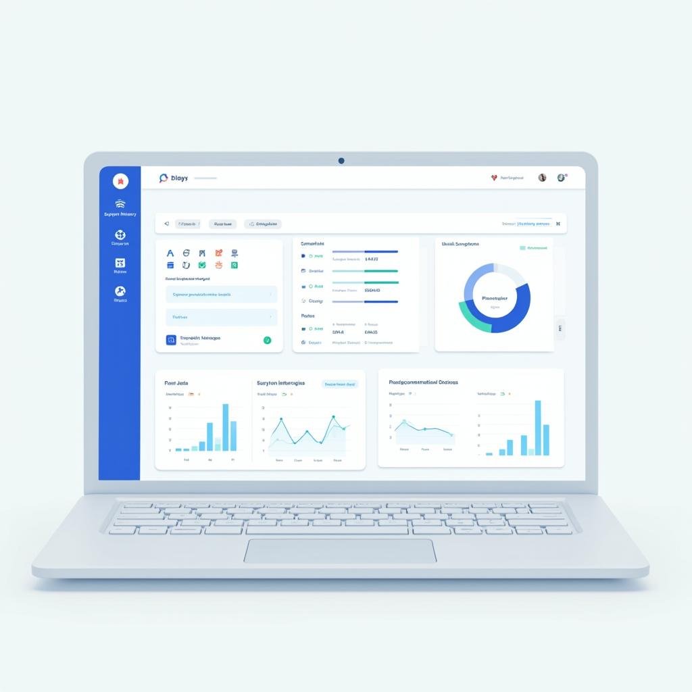
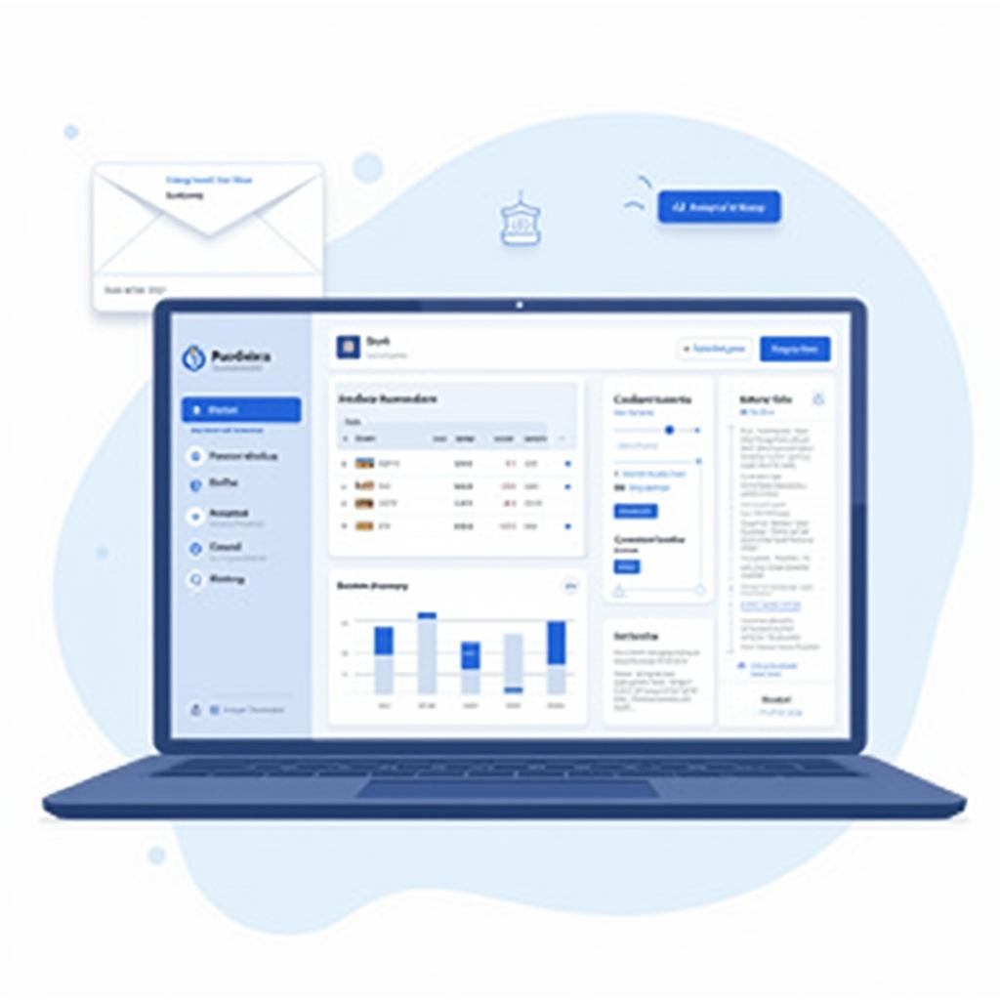
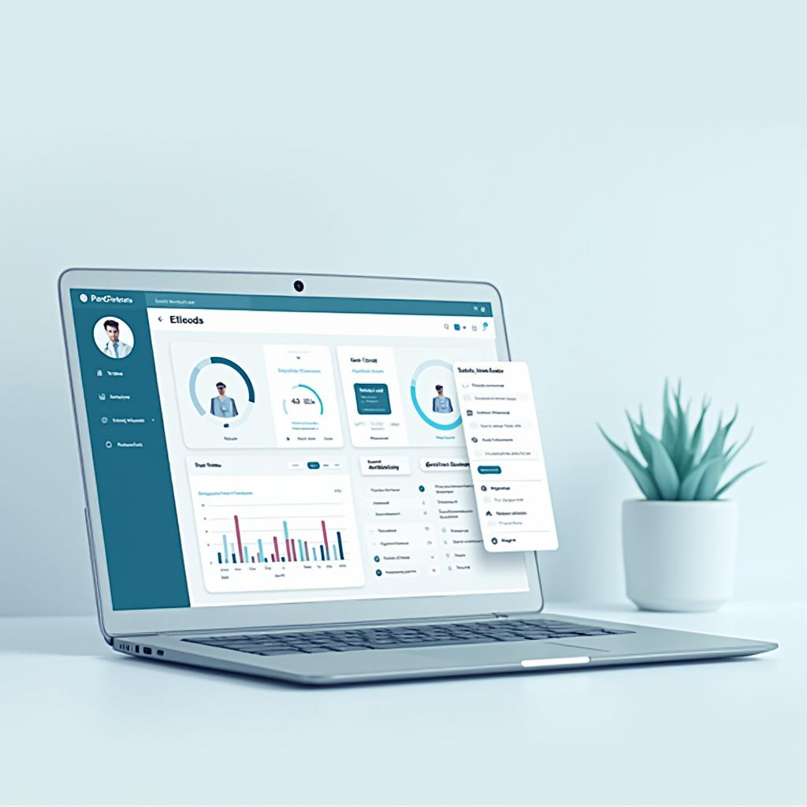

Descubre VitaLink - Tu Plataforma Médica Digital
Gestiona tus citas, historiales médicos y tratamientos de manera sencilla e intuitiva.
Registro y Seguimiento de Síntomas
Anota cómo te sientes diariamente.
Genera reportes visuales para compartir con tu doctor.


Gestor de Medicamentos y Tratamientos
Anota cómo te sientes diariamente.
Registra tus tratamientos y consulta cómo han evolucionado con el tiempo.
Accesibilidad y Comodidad
Disponible en versión web y móvil.
Diseñada para ser intuitiva y fácil de usar.

Seguridad y Privacidad
Protegemos tu información con altos estándares de seguridad (cumplimos con normativas como HIPAA y GDPR).
Asistente Virtual con Inteligencia Artificial (Próximamente)
Obtén respuestas rápidas a dudas comunes sobre tu tratamiento.
Accede a información confiable sin necesidad de esperar una consulta.